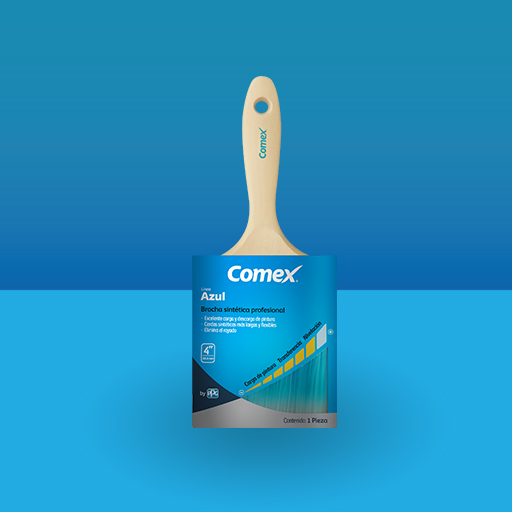
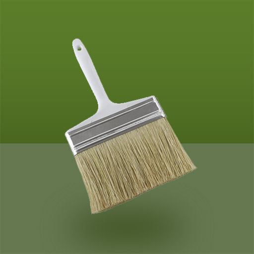
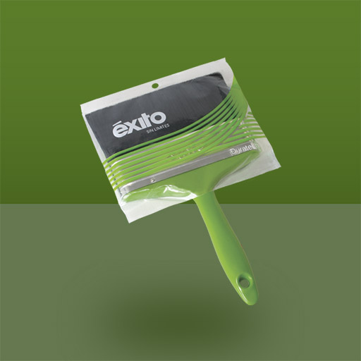

Producto estrella de Berel. Fabricada con filamentos sintéticos de alta durabilidad desarrollados con tecnología de punta que permite "acariciar" la pintura,
proporcionando con ello un acabado profesional. En las medidas de 1.5" a 2.5" el corte es angular, lo que proporciona mayor accesibilidad para lograr la máxima
calidad en los recortes y remates específicos requeridos de la aplicación.
Medidas: 1, 1 1/2, 2, 2 1/2, 3, 4 pulgadas
SKU: 19AH024119

Calzomina
Brocha con mango ergonómico extendido para un mayor alcance. El cuerpo de la brocha es de fibra natural debidamente recortada para una mejor aplicación de la mezcla de calhidra y agua.
Medidas disponibles: 4, 5 y 6 pulgadas.
Recomendaciones de uso (Brochas):
Limpiar la brocha inmediatamente después de usarse. Utilizar solventes adecuados para pinturas a base de aceites. Para vinílicas y pinturas base agua utilizar agua tibia o una solución de agua con detergente.
Para conservar las cerdas en buen estado estado colocar la brocha en su empaque original o envolver las cerdas en papel aluminio y colgar la brocha en un clavo. Nunca deje la brocha recargada sobre las cerdas.

Línea con cerda sintética especial ideal para todo tipo de pinturas. Fue desarrollada considerando las necesidades del pintor ocasional que busca productos flexibles con tecnología de vanguardia.
Medidas disponibles: 4, 5 y 6 pulgadas.
